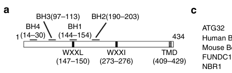

BCL2L13 (Bcl-rambo, Mil1) is a tail-anchored mitochondrial outer-membrane protein of the BCL-2 family that contains all four BCL-2 homology motifs (BH1-BH4) plus a unique ~250-residue insertion with tandem repeats preceding its C-terminal transmembrane anchor. It is the mammalian functional homolog of the yeast mitophagy receptor Atg32: through an LC3-interacting region it binds Atg8-family proteins (LC3/GABARAP, including GABARAPL2) to recruit the autophagy machinery to mitochondria, promoting mitochondrial fragmentation and selective autophagy of mitochondria (mitophagy) independently of the canonical DRP1 fission machinery. BCL2L13 was originally described as a pro-apoptotic BCL-2 homolog whose cell-death activity, which can promote caspase-3 activation, is conferred by its membrane-anchored C-terminal region rather than its BH motifs; unlike most BCL-2-family members it does not heterodimerize with other family members. It is broadly expressed (notably in heart, placenta, pancreas and skeletal muscle) and is targeted by the Legionella pneumophila effector SidF, which neutralizes it to block host apoptosis. A short nuclear-localized splice isoform lacking the transmembrane anchor also exists.
| GO Term | Evidence | Action | Reason |
|---|---|---|---|
|
GO:0005739
mitochondrion
|
IBA
GO_REF:0000033 |
ACCEPT |
Summary: BCL2L13 is a mitochondrial protein that acts at the mitochondrion (mitophagy receptor and pro-apoptotic activity at the mitochondrial outer membrane).
Reason: Mitochondrial localization/activity is strongly and consistently supported; the mitochondrion is the principal functional compartment.
Supporting Evidence:
PMID:11262395
Bcl-rambo was localized to mitochondria
file:human/BCL2L13/BCL2L13-uniprot.txt
SUBCELLULAR LOCATION: [Isoform 2]: Mitochondrion membrane
|
|
GO:0016020
membrane
|
IBA
GO_REF:0000033 |
MARK AS OVER ANNOTATED |
Summary: BCL2L13 is a single-pass tail-anchored membrane protein; generic membrane localization is correct but uninformative relative to the specific mitochondrial membrane.
Reason: The generic membrane term is subsumed by the more specific and well-supported mitochondrial (outer) membrane localization.
Supporting Evidence:
file:human/BCL2L13/BCL2L13-uniprot.txt
Single-pass membrane protein
|
|
GO:0005634
nucleus
|
IEA
GO_REF:0000044 |
KEEP AS NON CORE |
Summary: A nuclear localization is reported in UniProt, largely for the truncated isoform 1 that lacks the transmembrane anchor; it is secondary to the mitochondrial role.
Reason: Nuclear localization is documented (especially for the short nuclear isoform) but is not the functional compartment for the conserved mitophagy/mitochondrial activities.
Supporting Evidence:
file:human/BCL2L13/BCL2L13-uniprot.txt
SUBCELLULAR LOCATION: [Isoform 1]: Nucleus
|
|
GO:0006915
apoptotic process
|
IEA
GO_REF:0000002 |
KEEP AS NON CORE |
Summary: BCL2L13/Bcl-rambo can promote apoptosis (originally described as a pro-apoptotic BCL-2 homolog), an InterPro-based transfer consistent with the experimental literature.
Reason: A pro-apoptotic capacity is genuine but context/overexpression-dependent and secondary to the conserved mitophagy-receptor function.
Supporting Evidence:
PMID:11262395
its overexpression induces apoptosis that is specifically blocked by the caspase inhibitors, IAPs
|
|
GO:0031966
mitochondrial membrane
|
IEA
GO_REF:0000044 |
ACCEPT |
Summary: BCL2L13 is anchored in the mitochondrial membrane (outer membrane), consistent with its tail-anchor and UniProt subcellular location.
Reason: Well-supported core localization; the mitochondrial membrane is where BCL2L13 acts.
Supporting Evidence:
file:human/BCL2L13/BCL2L13-uniprot.txt
SUBCELLULAR LOCATION: [Isoform 2]: Mitochondrion membrane
|
|
GO:0042981
regulation of apoptotic process
|
IEA
GO_REF:0000002 |
KEEP AS NON CORE |
Summary: As a BCL-2-family protein with pro-apoptotic activity, BCL2L13 participates in regulation of apoptosis; an InterPro-based transfer consistent with the literature.
Reason: Supported by the apoptosis literature but context-dependent and secondary to the mitophagy-receptor function.
Supporting Evidence:
PMID:11262395
Bcl-rambo constitutes a novel type of pro-apoptotic Bcl-2 member that triggers cell death independently of its BH motifs.
|
|
GO:0005515
protein binding
|
IPI
PMID:16189514 Towards a proteome-scale map of the human protein-protein in... |
MARK AS OVER ANNOTATED |
Summary: High-throughput interactome protein-binding annotation; uninformative for BCL2L13 function.
Reason: Generic protein binding from a proteome-scale interaction map does not identify an interpretable BCL2L13 function.
|
|
GO:0005515
protein binding
|
IPI
PMID:17360363 Legionella pneumophila inhibits macrophage apoptosis by targ... |
MARK AS OVER ANNOTATED |
Summary: This protein-binding annotation reflects the specific interaction of Bcl-rambo with the Legionella effector SidF (which neutralizes it to block host apoptosis); as bare protein binding it is uninformative.
Reason: The underlying SidF interaction is meaningful and confirms Bcl-rambo as a pro-death host target, but the generic protein binding term does not capture this; no specific GO binding term for a bacterial effector applies.
Supporting Evidence:
PMID:17360363
SidF contributes to apoptosis resistance in L. pneumophila-infected cells by specifically interacting with and neutralizing the effects of BNIP3 and Bcl-rambo, two proapoptotic members of Bcl2 protein family.
|
|
GO:0005515
protein binding
|
IPI
PMID:25416956 A proteome-scale map of the human interactome network. |
MARK AS OVER ANNOTATED |
Summary: High-throughput interactome protein-binding annotation; uninformative for BCL2L13 function.
Reason: Generic protein binding from a proteome-scale interactome map is not functionally specific.
|
|
GO:0005515
protein binding
|
IPI
PMID:25910212 Widespread macromolecular interaction perturbations in human... |
MARK AS OVER ANNOTATED |
Summary: High-throughput interactome protein-binding annotation; uninformative for BCL2L13 function.
Reason: Generic protein binding from a disease-interactome perturbation study is not functionally specific.
|
|
GO:0005515
protein binding
|
IPI
PMID:26871637 Widespread Expansion of Protein Interaction Capabilities by ... |
MARK AS OVER ANNOTATED |
Summary: High-throughput alternative-splicing interactome protein-binding annotation; uninformative for BCL2L13 function.
Reason: Generic protein binding from a large-scale splicing-interactome study is not functionally specific.
|
|
GO:0005515
protein binding
|
IPI
PMID:28514442 Architecture of the human interactome defines protein commun... |
MARK AS OVER ANNOTATED |
Summary: High-throughput interactome protein-binding annotation; uninformative for BCL2L13 function.
Reason: Generic protein binding from a large-scale interactome study is not functionally specific.
|
|
GO:0005515
protein binding
|
IPI
PMID:32296183 A reference map of the human binary protein interactome. |
MARK AS OVER ANNOTATED |
Summary: High-throughput interactome protein-binding annotation; uninformative for BCL2L13 function.
Reason: Generic protein binding from a reference binary interactome map is not functionally specific.
|
|
GO:0005515
protein binding
|
IPI
PMID:32814053 Interactome Mapping Provides a Network of Neurodegenerative ... |
MARK AS OVER ANNOTATED |
Summary: High-throughput neurodegenerative-disease interactome protein-binding annotation; uninformative for BCL2L13 function.
Reason: Generic protein binding from a disease-interactome study is not functionally specific.
|
|
GO:0005515
protein binding
|
IPI
PMID:33961781 Dual proteome-scale networks reveal cell-specific remodeling... |
MARK AS OVER ANNOTATED |
Summary: High-throughput interactome protein-binding annotation; uninformative for BCL2L13 function.
Reason: Generic protein binding from a cell-specific interactome remodeling study is not functionally specific.
|
|
GO:0005739
mitochondrion
|
IEA
GO_REF:0000107 |
ACCEPT |
Summary: Orthology-based transfer of mitochondrial activity, consistent with the well-supported mitochondrial localization/function of BCL2L13.
Reason: Consistent with the core mitochondrial compartment where BCL2L13 acts.
Supporting Evidence:
PMID:11262395
Bcl-rambo was localized to mitochondria
|
|
GO:0005739
mitochondrion
|
IDA
GO_REF:0000052 |
ACCEPT |
Summary: Immunofluorescence-based mitochondrial localization, consistent with the literature.
Reason: Directly supported core localization.
Supporting Evidence:
PMID:11262395
Bcl-rambo was localized to mitochondria
|
|
GO:0005739
mitochondrion
|
HTP
PMID:34800366 Quantitative high-confidence human mitochondrial proteome an... |
ACCEPT |
Summary: High-throughput mitochondrial proteome localization, consistent with BCL2L13 being a mitochondrial protein.
Reason: Consistent with the well-supported core mitochondrial localization.
Supporting Evidence:
PMID:34800366
mitochondrial proteome
|
|
GO:0006915
apoptotic process
|
NAS
PMID:11262395 Bcl-rambo, a novel Bcl-2 homologue that induces apoptosis vi... |
KEEP AS NON CORE |
Summary: The founding Bcl-rambo study reports that overexpression induces caspase-dependent apoptosis, providing the basis for the apoptotic-process annotation.
Reason: A pro-apoptotic role is supported but is overexpression-driven and context-dependent; secondary to the conserved mitophagy-receptor function.
Supporting Evidence:
PMID:11262395
its overexpression induces apoptosis that is specifically blocked by the caspase inhibitors, IAPs
|
|
GO:0005739
mitochondrion
|
NAS
PMID:11262395 Bcl-rambo, a novel Bcl-2 homologue that induces apoptosis vi... |
ACCEPT |
Summary: The founding study localized Bcl-rambo to mitochondria.
Reason: Directly supported core localization.
Supporting Evidence:
PMID:11262395
Bcl-rambo was localized to mitochondria
|
|
GO:0008656
cysteine-type endopeptidase activator activity involved in apoptotic process
|
NAS
PMID:11262395 Bcl-rambo, a novel Bcl-2 homologue that induces apoptosis vi... |
KEEP AS NON CORE |
Summary: BCL2L13-induced apoptosis is caspase-dependent (blocked by caspase inhibitors/IAPs), and UniProt states it may promote caspase-3 activation; this caspase-activator annotation captures a contextual pro-apoptotic effect rather than a direct, conserved molecular function.
Reason: The caspase-3 activation is indirect/context-dependent (overexpression-driven apoptosis) and is not the conserved core molecular function (mitophagy-receptor activity); retained as a non-core apoptosis-related annotation.
Supporting Evidence:
PMID:11262395
its overexpression induces apoptosis that is specifically blocked by the caspase inhibitors, IAPs
file:human/BCL2L13/BCL2L13-uniprot.txt
May promote the activation of caspase-3 and apoptosis.
|
|
GO:0016020
membrane
|
IDA
PMID:11262395 Bcl-rambo, a novel Bcl-2 homologue that induces apoptosis vi... |
MARK AS OVER ANNOTATED |
Summary: Bcl-rambo's cell-death activity maps to its membrane-anchored C-terminal domain; generic membrane localization is correct but uninformative.
Reason: Subsumed by the specific mitochondrial (outer) membrane localization.
Supporting Evidence:
PMID:11262395
the Bcl-rambo cell death activity was induced by its membrane-anchored C-terminal domain
|
|
GO:0140580
mitochondrion autophagosome adaptor activity
|
IDA
PMID:26146385 Bcl-2-like protein 13 is a mammalian Atg32 homologue that me... |
NEW |
Summary: BCL2L13/Bcl2-L-13 is an outer-mitochondrial-membrane mitophagy receptor that binds LC3 through its WXXI/LIR motif and recruits autophagy machinery to mitochondria.
Reason: The PN-guided review identified that the YAML's proposed "mitophagy receptor activity" request is already covered by GO:0140580. This existing MF should be added instead of requesting a new term.
Supporting Evidence:
PMID:26146385
Bcl2-L-13 binds to LC3 through the WXXI motif and induces mitochondrial fragmentation and mitophagy
|
|
GO:0000423
mitophagy
|
IMP
PMID:26146385 Bcl-2-like protein 13 is a mammalian Atg32 homologue that me... |
NEW |
Summary: BCL2L13 promotes selective autophagy of mitochondria, and knockdown attenuates damage-induced mitochondrial fragmentation and mitophagy.
Reason: The review already treats mitophagy as the core biological process, but the seeded existing_annotations lacked a manual recommendation for the BP term. This adds the existing GO process term with primary evidence.
Supporting Evidence:
PMID:26146385
Knockdown of Bcl2-L-13 attenuates mitochondrial damage-induced fragmentation and mitophagy
|
Q: In normal physiology, is BCL2L13's predominant role the Atg32-like mitophagy-receptor function, the pro-apoptotic function, or are these separable activities engaged in different cell types or stress conditions?
Suggested experts: Murakawa T, Otsu K
Q: Does BCL2L13-mediated mitochondrial fragmentation occur independently of the canonical DRP1 fission machinery, and how is the LIR-dependent LC3 binding regulated?
Suggested experts: Murakawa T, Otsu K
Q: Is BCL2L13's localization to ER-mitochondria contact sites (mitochondria-associated membranes) and its regulation of ER-mitochondria Ca2+ flux a distinct function from its mitophagy-receptor activity, or are the two mechanistically coupled?
Suggested experts: Amati F, Grepper D
Q: How is the choice between DRP1-independent fragmentation (Murakawa) and DNM1L/DRP1-Ser616-dependent fission (glioblastoma) determined, and which cellular contexts favor each, given the opposing tissue-dependent roles of BCL2L13 (pro-survival in GBM vs tumor-suppressive in renal cell carcinoma)?
Experiment: Compare wild-type BCL2L13 with LIR-motif point mutants for LC3/GABARAP co-immunoprecipitation and for the ability to induce mitochondrial fragmentation and mitophagy (mito-Keima/mito-QC flux) in BCL2L13-null cells, including under uncoupler-induced and starvation-induced conditions.
Hypothesis: BCL2L13 acts as an LIR-dependent mitophagy receptor that recruits LC3/GABARAP to mitochondria to drive their selective autophagy.
Type: structure-function rescue and mitophagy flux assay
Experiment: Use domain-deletion and point-mutant constructs (BH motifs, LIR motif, C-terminal insertion/TM) to dissociate caspase-3 activation/apoptosis from LC3-dependent mitophagy, measuring both readouts in parallel in defined cell models.
Hypothesis: The pro-apoptotic and mitophagy-receptor activities of BCL2L13 are mechanistically separable.
Type: domain dissection with parallel apoptosis and mitophagy readouts
The research report should be a detailed narrative explaining the function, biological processes, and localization of the gene product. Citations should be given for all claims.
You should prioritize authoritative reviews and primary scientific literature when conducting research. You can supplement
this with annotations you find in gene/protein databases, but these can be outdated or inaccurate.
We are specifically interested in the primary function of the gene - for enzymes, what reaction is catalyzed, and what is the substrate specificity? For transporters, what is the substrate? For structural proteins or adapters, what is the broader structural role? For signaling molecules, what is the role in the pathway.
We are interested in where in or outside the cell the gene product carries out its function.
We are also interested in the signaling or biochemical pathways in which the gene functions. We are less interested in broad pleiotropic effects, except where these elucidate the precise role.
Include evidence where possible. We are interested in both experimental evidence as well as inference from structure, evolution, or bioinformatic analysis. Precise studies should be prioritized over high-throughput, where available.
The literature retrieved matches the UniProt target Q9BXK5: Bcl-2-like protein 13 (BCL2L13), also termed BCL-RAMBO / Bcl2-L-13 / MIL1, a Bcl-2 family protein that localizes to mitochondria via a C-terminal transmembrane (TM) domain and contains Bcl-2 homology motifs plus an LC3-interacting region consistent with mitophagy receptor function (murakawa2015bcl2likeprotein13 pages 1-2, kataoka2022biologicalpropertiesof pages 4-6, kataoka2022biologicalpropertiesof pages 6-8). No evidence in the retrieved set suggested a different gene/protein with the same symbol in human.
Mitophagy is selective macroautophagy targeting mitochondria; receptor-mediated (ubiquitin-independent) mitophagy relies on OMM proteins containing LIR motifs that directly bind ATG8-family proteins (LC3/GABARAP) on forming autophagosomes (yamaguchi2016receptormediatedmitophagy. pages 4-5, kataoka2022biologicalpropertiesof pages 4-6). BCL2L13 is established as a mammalian functional homologue of yeast Atg32 that can mediate mitophagy and mitochondrial fragmentation in mammalian cells (murakawa2015bcl2likeprotein13 pages 1-2).
Mechanistically, BCL2L13 contains WXXL/I motifs, one of which functions as a LIR enabling direct binding to LC3B (murakawa2015bcl2likeprotein13 pages 1-2). CCCP-induced mitochondrial damage increases the endogenous interaction between BCL2L13 and LC3 in HEK293 cells, and BCL2L13 knockdown attenuates CCCP-induced mitochondrial fragmentation and mitophagy (yamaguchi2016receptormediatedmitophagy. pages 4-5, murakawa2015bcl2likeprotein13 pages 1-2).
Primary and review sources converge on the following architecture:
- BH1–BH4 domains (Bcl-2 homology) (murakawa2015bcl2likeprotein13 pages 1-2, kataoka2022biologicalpropertiesof pages 4-6).
- Two WXXL/I motifs, with the second motif (~273–276 in the mouse/human-aligned region) serving as the key LIR for LC3 interaction (yamaguchi2016receptormediatedmitophagy. pages 4-5, murakawa2015bcl2likeprotein13 pages 1-2).
- In the focused review, human BCL2L13 is described as 485 aa and includes a BHNo region containing an LIR with sequence WQQI (human residues 276–279, mouse 273–276) (kataoka2022biologicalpropertiesof pages 4-6).
- A C-terminal TM domain required for mitochondrial targeting/anchoring (yamaguchi2016receptormediatedmitophagy. pages 4-5, kataoka2022biologicalpropertiesof pages 6-8).
Image-based evidence from Murakawa et al. includes a schematic of BH domains, WXXL/I motifs, and TM domain, and experimental LC3-binding data dependent on the LIR (murakawa2015bcl2likeprotein13 media a5a4456b).
A consistent theme is functional modularity:
- BH domains are required for mitochondrial fragmentation.
- The LIR/WXXI motif is required for mitophagy but not necessarily fragmentation.
This separation is explicitly described in both the primary study and the mitophagy review (yamaguchi2016receptormediatedmitophagy. pages 4-5, murakawa2015bcl2likeprotein13 pages 1-2).
BCL2L13 can induce mitophagy in Parkin-deficient contexts, placing it within ubiquitin-independent pathways rather than relying on the classic PINK1/Parkin ubiquitin cascade (yamaguchi2016receptormediatedmitophagy. pages 4-5, murakawa2015bcl2likeprotein13 pages 1-2).
BCL2L13 is described as an outer mitochondrial membrane protein whose mitochondrial localization depends on its C-terminal TM domain (yamaguchi2016receptormediatedmitophagy. pages 4-5, murakawa2015bcl2likeprotein13 pages 1-2, kataoka2022biologicalpropertiesof pages 6-8). Murakawa et al. provide figure-level support for domain organization and mitochondrial function readouts (murakawa2015bcl2likeprotein13 media a5a4456b, murakawa2015bcl2likeprotein13 media c41d0676).
A major 2024 development is the extension of BCL2L13 function beyond canonical mitophagy receptor activity into ER–mitochondria contact site biology. Grepper et al. report BCL2L13 localization across mitochondria, ER, and mitochondria-associated membranes, and show that altering BCL2L13 affects Ca2+ handling without changing the number of ER–mitochondria contacts (grepper2024bcl2l13atendoplasmic pages 1-2, grepper2024bcl2l13atendoplasmic pages 2-4, grepper2024bcl2l13atendoplasmic pages 8-11).
BCL2L13 binds LC3 through the LIR/WXXI motif; mutation of the motif decreases LC3 interaction, and LIR integrity is required for mitophagy (murakawa2015bcl2likeprotein13 pages 1-2, murakawa2015bcl2likeprotein13 media a5a4456b). Phosphorylation near the LIR (Ser272 in mouse numbering) modulates LC3 binding and mitophagic activity (yamaguchi2016receptormediatedmitophagy. pages 4-5, kataoka2022biologicalpropertiesof pages 9-11).
A focused review summarizes evidence that BCL2L13 can co-immunoprecipitate with ULK1, and “appears to recruit the ULK1 complex to the MOM” to support autophagosome formation during mitophagy (kataoka2022biologicalpropertiesof pages 9-11).
Foundational work indicates BCL2L13 can induce fragmentation independent of DRP1/DNM1L (murakawa2015bcl2likeprotein13 pages 1-2, kataoka2022biologicalpropertiesof pages 9-11). However, recent cancer-specific work in glioblastoma indicates a distinct mechanism where BCL2L13 promotes mitochondrial fission through DNM1L Ser616 regulation, coupled to increased mitophagy flux (wang2023bcl2l13promotesmitophagy pages 1-2). This suggests context-dependent fission wiring, where BCL2L13 may either bypass DRP1 in some systems or act upstream of DRP1 activation in others (murakawa2015bcl2likeprotein13 pages 1-2, wang2023bcl2l13promotesmitophagy pages 1-2).
Reviews summarize multiple reported interactions and modulators, including PGAM5, ANT, VDAC, CERS2/CERS6, LC3/GABARAP proteins, and ULK1, with PGAM5 also described as a negative regulator of BCL2L13-mediated mitophagy via dephosphorylation of a regulatory serine site (kataoka2022biologicalpropertiesof pages 11-12, kataoka2022biologicalpropertiesof pages 9-11, kataoka2022biologicalpropertiesof pages 6-8).
Wang et al. (Cell Death & Disease; Sep 2023; https://doi.org/10.1038/s41419-023-06112-4) report that BCL2L13 is upregulated in GBM and associates with higher grade and mesenchymal subtype. Functional knockdown reduces viability, migration, invasion, and mitophagy markers, while overexpression increases LC3B-II and mitophagy phenotypes; autophagy inhibitors reverse pro-tumor phenotypes (wang2023bcl2l13promotesmitophagy pages 2-4). In an orthotopic mouse model, reported tumor bioluminescence was approximately 55 × 10^8 vs 30 × 10^8 photons/s (control vs BCL2L13 knockdown), and Kaplan–Meier analysis indicated improved survival with knockdown (P < 0.05) (wang2023bcl2l13promotesmitophagy pages 8-11). Mechanistically, the study links BCL2L13 to DNM1L Ser616 regulation and increased mitophagy flux (wang2023bcl2l13promotesmitophagy pages 1-2).
Grepper et al. (iScience; Aug 2024; https://doi.org/10.1016/j.isci.2024.110510) propose BCL2L13 as a regulator of ER–mitochondria Ca2+ homeostasis important for muscle function (grepper2024bcl2l13atendoplasmic pages 1-2). In bcl2l13 knockout zebrafish (n=16/group), KO animals were smaller and showed impaired locomotion and lower MO2max and Ucrit (grepper2024bcl2l13atendoplasmic pages 2-4). A striking histological statistic reported is tubular aggregates in 11% of KO fibers vs 0% in WT, consistent with disturbed SR/Ca2+ handling (grepper2024bcl2l13atendoplasmic pages 2-4). In C2C12-derived assays, Bcl2l13 knockdown reduced SR Ca2+ release and increased mitochondrial Ca2+ uptake; ER–mitochondria proximity reporters (SPLICS) and EM analyses indicate ERMC number/extent was not significantly altered, supporting a functional rather than purely structural contact-site effect (grepper2024bcl2l13atendoplasmic pages 8-11).
Luo et al. (Biological Research; Mar 2024; https://doi.org/10.1186/s40659-024-00487-0) identify BCL2L13 as a YME1L-interacting partner by LC–MS/MS and confirm interaction by co-IP in HK2 renal tubular epithelial cells; high glucose weakens this interaction and reduces phosphorylated BCL2L13 (luo2024yme1lmediatedmitophagyprotects pages 12-15, luo2024yme1lmediatedmitophagyprotects pages 15-18). YME1L overexpression increases BCL2L13 phosphorylation and strengthens BCL2L13–LC3 binding, supporting enhanced mitophagy (luo2024yme1lmediatedmitophagyprotects pages 15-18, luo2024yme1lmediatedmitophagyprotects pages 18-20). Functionally, BCL2L13 knockdown abrogates YME1L-mediated improvements in mitophagy readouts (LC3II/COX IV and LC3II/TOM20 colocalization) and anti-senescence effects (SA-β-Gal positivity, P16/P21) (luo2024yme1lmediatedmitophagyprotects pages 15-18). The study reports in vivo group sizes n=8–10 and typical cellular replicate sizes n=3–4, with standard significance thresholds (p<0.05, p<0.01, **p<0.001) (luo2024yme1lmediatedmitophagyprotects pages 20-21).
Jiang et al. (Applied Biochemistry and Biotechnology; Apr 2024; https://doi.org/10.1007/s12010-024-04931-5) show that in hypoxic AC16 human cardiomyocytes, miR-449b-5p is downregulated and BCL2L13 is validated as a direct target by dual-luciferase assays (jiang2024mir449b5pameliorateshypoxiainduced pages 3-6). Manipulations indicate that BCL2L13 inhibition reduces hypoxia-induced viability loss, LDH release, apoptosis, and oxidative stress; BCL2L13 overexpression negates miR-449b-5p protective effects, linking BCL2L13 to injury susceptibility (jiang2024mir449b5pameliorateshypoxiainduced pages 3-6, jiang2024mir449b5pameliorateshypoxiainduced pages 1-3). Reported experimental details include mimic/inhibitor concentrations and statistical analysis across three independent experiments (jiang2024mir449b5pameliorateshypoxiainduced pages 3-6).
Focused and mechanistic reviews emphasize that BCL2L13 is unusual among Bcl-2 family members because it participates in both mitochondrial quality control (mitophagy) and mitochondria-mediated apoptosis signaling, and that its outputs are highly context- and cell-type-dependent, likely governed by post-translational modifications (e.g., Ser272-adjacent phosphorylation), binding partners (e.g., PGAM5), and stress conditions (kataoka2022biologicalpropertiesof pages 11-12, kataoka2022biologicalpropertiesof pages 9-11, kataoka2022biologicalpropertiesof pages 6-8). The 2016 receptor-mitophagy review frames BCL2L13 as a receptor capable of driving mitophagy independently of Parkin and links its function to conserved Atg32-like design principles (LIR-mediated ATG8 binding plus mitochondrial anchoring) (yamaguchi2016receptormediatedmitophagy. pages 4-5).
Key quantitative/statistical items available in retrieved text:
- GBM orthotopic model (2023): tumor bioluminescence ~55 × 10^8 vs 30 × 10^8 photons/s (control vs BCL2L13 knockdown), and survival benefit P < 0.05 (wang2023bcl2l13promotesmitophagy pages 8-11).
- Skeletal muscle zebrafish KO (2024): n=16/group; tubular aggregates present in 11% of KO fibers and 0% of WT fibers (grepper2024bcl2l13atendoplasmic pages 2-4). Cellular quantification for contact sensors used n=30 cells (grepper2024bcl2l13atendoplasmic pages 8-11).
- DKD study (2024): in vivo n=8–10/group, typical in vitro n=3–4, with reported significance thresholds (p<0.05, p<0.01, p<0.001) (luo2024yme1lmediatedmitophagyprotects pages 20-21).
- Cardiomyocyte hypoxia study (2024):** experimental dosing and replicate structure reported (e.g., 50 nM mimics; 100 nM inhibitors; three independent experiments) (jiang2024mir449b5pameliorateshypoxiainduced pages 3-6).
The following table consolidates the evidence across foundational and recent sources.
| Study / source | Identity | Domains / motifs | Localization | Molecular functions | Key interactors | Pathway position | Physiological roles | Disease contexts | Recent 2023–2024 findings with citations and dates | Quantitative / statistical notes |
|---|---|---|---|---|---|---|---|---|---|---|
| Murakawa et al., 2015 | Human/mammalian BCL2L13, also called Bcl-rambo/Bcl2-L-13; identified as a mammalian functional homologue of yeast Atg32 (murakawa2015bcl2likeprotein13 pages 1-2) | BH1–BH4 domains; two WXXL/I motifs, with the second motif at 273–276 functioning as the LC3-interacting region required for mitophagy (murakawa2015bcl2likeprotein13 pages 1-2, murakawa2015bcl2likeprotein13 media a5a4456b) | Outer mitochondrial membrane protein with C-terminal transmembrane anchor (murakawa2015bcl2likeprotein13 pages 1-2, murakawa2015bcl2likeprotein13 media a5a4456b) | Induces mitochondrial fragmentation and mitophagy; BH domains required for fragmentation, LIR required for mitophagy; fragmentation can occur independent of Drp1 and mitophagy in Parkin-deficient cells (murakawa2015bcl2likeprotein13 pages 1-2) | LC3B binding shown by GST pull-down / yeast two-hybrid; LC3 interaction enhanced after CCCP (murakawa2015bcl2likeprotein13 pages 1-2, murakawa2015bcl2likeprotein13 media a5a4456b) | Receptor-mediated, ubiquitin-independent mitophagy at the mitochondrial outer membrane; engages core autophagy machinery (murakawa2015bcl2likeprotein13 pages 1-2) | Mitochondrial quality control; rescue of mitophagy in Atg32-deficient yeast supports conserved quality-control role (murakawa2015bcl2likeprotein13 pages 1-2) | Primarily mechanistic foundational study rather than disease-focused (murakawa2015bcl2likeprotein13 pages 1-2) | Foundational primary paper establishing BCL2L13 as a mitophagy receptor and fragmentation factor, July 2015 (murakawa2015bcl2likeprotein13 pages 1-2) | Motif positions 147–150 and 273–276 defined; figure evidence shows W273A/I276A mutation weakens LC3B binding and LIR-dependent mitophagy (murakawa2015bcl2likeprotein13 media a5a4456b) |
| Yamaguchi et al., 2016 review | Reviews BCL2L13/Bcl-rambo as a mammalian mitophagy receptor protein (yamaguchi2016receptormediatedmitophagy. pages 4-5) | Highlights second LIR motif at residues 273–276 and adjacent Ser272 phosphorylation site regulating LC3 binding (yamaguchi2016receptormediatedmitophagy. pages 4-5) | Outer mitochondrial membrane, TM-domain anchored (yamaguchi2016receptormediatedmitophagy. pages 4-5) | Separates mitochondrial fission and mitophagy functions: BH1–4 support fission, LIR/LC3 binding specifically supports mitophagy (yamaguchi2016receptormediatedmitophagy. pages 4-5) | LC3; core autophagy factor Atg7 required in yeast rescue experiments; Parkin not required (yamaguchi2016receptormediatedmitophagy. pages 4-5) | Places BCL2L13 within receptor-mediated mitophagy, distinct from PINK1/Parkin ubiquitin-driven pathway (yamaguchi2016receptormediatedmitophagy. pages 4-5) | Mitochondrial homeostasis under stress, especially damage-induced mitophagy after CCCP (yamaguchi2016receptormediatedmitophagy. pages 4-5) | Review links mitophagy dysregulation broadly to cardiac and other diseases but not with disease-specific BCL2L13 statistics (yamaguchi2016receptormediatedmitophagy. pages 4-5) | Review synthesis published June 2016; emphasizes Ser272-dependent tuning of LC3 interaction and mitophagic activity (yamaguchi2016receptormediatedmitophagy. pages 4-5) | S272A mutant retains fragmentation but shows reduced LC3 interaction and mitophagy; knockdown attenuates CCCP-induced fragmentation/mitophagy (yamaguchi2016receptormediatedmitophagy. pages 4-5) |
| Kataoka, 2022 review | Human BCL2L13/BCL-RAMBO described as a BCL-2 family protein involved in apoptosis, mitochondrial fragmentation, and mitophagy (kataoka2022biologicalpropertiesof pages 4-6, kataoka2022biologicalpropertiesof pages 1-2) | Human protein 485 aa; BH1–BH4, BHNo domain, C-terminal TM domain; human LIR sequence WQQI at residues 276–279; Ser272 phosphorylation promotes mitophagy (kataoka2022biologicalpropertiesof pages 4-6, kataoka2022biologicalpropertiesof pages 9-11, kataoka2022biologicalpropertiesof pages 6-8) | Integral mitochondrial outer membrane protein; N-terminal domains exposed to cytosol; TM domain needed for mitochondrial targeting and PGAM5 binding (kataoka2022biologicalpropertiesof pages 11-12, kataoka2022biologicalpropertiesof pages 6-8) | Context-dependent apoptosis regulation, mitochondrial fragmentation, mitophagy receptor activity, and likely ULK1 recruitment to the MOM (kataoka2022biologicalpropertiesof pages 9-11, kataoka2022biologicalpropertiesof pages 6-8) | PGAM5, ULK1, LC3/GABARAP family, ANT, VDAC, CERS2/CERS6; does not co-IP with many canonical BCL-2 family partners (kataoka2022biologicalpropertiesof pages 9-11, kataoka2022biologicalpropertiesof pages 15-16, kataoka2022biologicalpropertiesof pages 6-8) | Positioned as a MOM-anchored receptor in ubiquitin-independent mitophagy; may recruit ULK1 complex and ATG8-family proteins (kataoka2022biologicalpropertiesof pages 4-6, kataoka2022biologicalpropertiesof pages 9-11) | Broad expression, relatively high in heart, skeletal muscle, pancreas; roles proposed in embryonic development, adipocyte browning, and mitochondrial quality control (kataoka2022biologicalpropertiesof pages 11-12) | Review summarizes roles across cancer, ischemia/reperfusion injury, and metabolism, but notes mechanistic complexity and cell-type dependence (kataoka2022biologicalpropertiesof pages 9-11, kataoka2022biologicalpropertiesof pages 15-16) | State-of-the-field review published December 2022 consolidating apoptosis/mitophagy/fragmentation evidence (kataoka2022biologicalpropertiesof pages 4-6, kataoka2022biologicalpropertiesof pages 9-11) | Notes apparent SDS-PAGE migration around ~85 kDa despite predicted 485 aa size; limited precise effect sizes in excerpted review text (kataoka2022biologicalpropertiesof pages 4-6) |
| Wang et al., 2023 GBM | Human BCL2L13 investigated in glioblastoma as an upregulated mitochondrial quality-control factor (wang2023bcl2l13promotesmitophagy pages 2-4, wang2023bcl2l13promotesmitophagy pages 1-2) | Not a motif-mapping study, but functionally linked to DNM1L Ser616-driven mitochondrial fission and mitophagy flux (wang2023bcl2l13promotesmitophagy pages 1-2) | Acts at mitochondria in GBM cells, consistent with mitophagy receptor role (wang2023bcl2l13promotesmitophagy pages 2-4) | Promotes mitophagy, proliferation, migration, and invasion; knockdown increases apoptosis and impairs tumor growth (wang2023bcl2l13promotesmitophagy pages 2-4, wang2023bcl2l13promotesmitophagy pages 8-11) | DNM1L/Drp1, BECN1, LC3B, and mitophagy/autophagy factors including NDP52, PINK1, Parkin, OPTN, BNIP3L/NIX, BNIP3 (wang2023bcl2l13promotesmitophagy pages 2-4) | Supports pro-tumor mitochondrial fission–mitophagy axis in GBM; autophagy inhibitors reverse BCL2L13-driven phenotypes (wang2023bcl2l13promotesmitophagy pages 2-4, wang2023bcl2l13promotesmitophagy pages 8-11) | In tumor cells, BCL2L13 appears to maintain mitochondrial quality control that supports survival and invasiveness rather than cell death (wang2023bcl2l13promotesmitophagy pages 2-4) | GBM: expression higher than normal brain, associated with higher grade and mesenchymal subtype; proposed biomarker/therapeutic target (wang2023bcl2l13promotesmitophagy pages 2-4, wang2023bcl2l13promotesmitophagy pages 1-2) | Key 2023 advance: Cell Death & Disease study (Sep 2023) linked BCL2L13 mechanistically to DNM1L-mediated fission and protective mitophagy in GBM (wang2023bcl2l13promotesmitophagy pages 1-2, wang2023bcl2l13promotesmitophagy pages 8-11) | Orthotopic mouse tumor bioluminescence reported ~55 × 10^8 vs ~30 × 10^8 photons/s for control vs BCL2L13 knockdown, with Kaplan–Meier survival benefit after knockdown (P < 0.05) (wang2023bcl2l13promotesmitophagy pages 8-11) |
| Jiang et al., 2024 cardiomyocyte hypoxia | Human BCL2L13 identified as a direct target of miR-449b-5p in AC16 cardiomyocytes under hypoxia (jiang2024mir449b5pameliorateshypoxiainduced pages 3-6, jiang2024mir449b5pameliorateshypoxiainduced pages 1-3) | Study leverages 3'UTR targeting rather than structural mapping; prior BCL2L13 BH/TM/LIR architecture acknowledged in background (jiang2024mir449b5pameliorateshypoxiainduced pages 1-3) | Studied in human cardiomyocytes under hypoxic stress; mitochondrial/apoptotic role inferred from known biology and downstream apoptotic signaling changes (jiang2024mir449b5pameliorateshypoxiainduced pages 3-6, jiang2024mir449b5pameliorateshypoxiainduced pages 1-3) | BCL2L13 promotes hypoxia-induced injury/apoptosis and oxidative stress in this model; suppression is protective (jiang2024mir449b5pameliorateshypoxiainduced pages 3-6, jiang2024mir449b5pameliorateshypoxiainduced pages 1-3) | miR-449b-5p directly targets BCL2L13; downstream PI3K/AKT, Bcl-2, Bax altered (jiang2024mir449b5pameliorateshypoxiainduced pages 3-6, jiang2024mir449b5pameliorateshypoxiainduced pages 1-3) | Positions BCL2L13 upstream of stress injury signaling in hypoxic cardiomyocytes, intersecting apoptosis and PI3K/AKT survival pathways (jiang2024mir449b5pameliorateshypoxiainduced pages 1-3) | Suggests BCL2L13 contributes to cardiomyocyte vulnerability during hypoxia/ischemic stress (jiang2024mir449b5pameliorateshypoxiainduced pages 1-3) | Cardiomyocyte hypoxia / ischemic heart disease model; therapeutic implication is inhibition of BCL2L13 via miR-449b-5p (jiang2024mir449b5pameliorateshypoxiainduced pages 3-6, jiang2024mir449b5pameliorateshypoxiainduced pages 1-3) | Important 2024 paper (Apr 2024) showing miRNA-mediated repression of BCL2L13 ameliorates hypoxia injury in human cardiomyocytes (jiang2024mir449b5pameliorateshypoxiainduced pages 3-6, jiang2024mir449b5pameliorateshypoxiainduced pages 1-3) | miR mimic/inhibitor doses reported (50 nM mimic, 100 nM inhibitor; co-transfection with 2 µg pcDNA3.1-BCL2L13); statistics from three independent experiments with p < 0.05 threshold, though exact fold-changes not in excerpt (jiang2024mir449b5pameliorateshypoxiainduced pages 3-6) |
| Luo et al., 2024 DKD | Human/mammalian BCL2L13 implicated as a mitophagy receptor downstream of YME1L in diabetic kidney disease models (luo2024yme1lmediatedmitophagyprotects pages 12-15, luo2024yme1lmediatedmitophagyprotects pages 15-18, luo2024yme1lmediatedmitophagyprotects pages 1-2) | Focus on phosphorylation state rather than primary motif mapping; phosphorylated BCL2L13 decreases in HG/DKD and rises with YME1L overexpression (luo2024yme1lmediatedmitophagyprotects pages 15-18, luo2024yme1lmediatedmitophagyprotects pages 18-20) | Studied in HK2 renal tubular epithelial cells and diabetic mouse kidneys; mitochondrial outer membrane mitophagy receptor role is central (luo2024yme1lmediatedmitophagyprotects pages 12-15, luo2024yme1lmediatedmitophagyprotects pages 15-18) | BCL2L13 supports mitophagy that restrains renal tubular senescence; loss impairs LC3 recruitment and worsens senescence markers (luo2024yme1lmediatedmitophagyprotects pages 12-15, luo2024yme1lmediatedmitophagyprotects pages 15-18) | YME1L interacts with BCL2L13; BCL2L13-LC3 binding strengthened by YME1L-mediated phosphorylation (luo2024yme1lmediatedmitophagyprotects pages 12-15, luo2024yme1lmediatedmitophagyprotects pages 15-18) | Places BCL2L13 in a YME1L→BCL2L13 phosphorylation→LC3 binding→mitophagy pathway that protects tubules under diabetic stress (luo2024yme1lmediatedmitophagyprotects pages 15-18, luo2024yme1lmediatedmitophagyprotects pages 18-20) | Renal tubular mitochondrial quality control and anti-senescence function under high glucose (luo2024yme1lmediatedmitophagyprotects pages 12-15, luo2024yme1lmediatedmitophagyprotects pages 18-20) | Diabetic kidney disease; potential therapeutic axis through YME1L/BCL2L13-mediated mitophagy (luo2024yme1lmediatedmitophagyprotects pages 12-15, luo2024yme1lmediatedmitophagyprotects pages 20-21, luo2024yme1lmediatedmitophagyprotects pages 1-2) | Important 2024 advance (Mar 2024): Biological Research study connected BCL2L13 phosphorylation and mitophagy with protection from DKD-associated tubular senescence (luo2024yme1lmediatedmitophagyprotects pages 12-15, luo2024yme1lmediatedmitophagyprotects pages 15-18) | Cellular assays typically n = 3–4; in vivo groups n = 8–10; significance annotations reported (p < 0.05, p < 0.01, **p < 0.001), but excerpt lacks exact effect sizes for LC3II, SA-β-Gal, UACR, creatinine (luo2024yme1lmediatedmitophagyprotects pages 20-21) |
| Grepper et al., 2024 skeletal muscle / ER-mito contacts | BCL2L13 studied as a mammalian ER–mitochondria contact-site protein in muscle, extending beyond its classic mitophagy annotation (grepper2024bcl2l13atendoplasmic pages 1-2, grepper2024bcl2l13atendoplasmic pages 2-4) | Not primarily a motif study; relies on known BCL2L13 identity while functionally mapping ERMC localization and calcium-regulatory role (grepper2024bcl2l13atendoplasmic pages 1-2, grepper2024bcl2l13atendoplasmic pages 2-4) | Localizes to mitochondria, ER, and mitochondria-associated membranes / ER–mitochondria contact sites (grepper2024bcl2l13atendoplasmic pages 1-2, grepper2024bcl2l13atendoplasmic pages 2-4) | Regulates calcium homeostasis, muscle bioenergetics, and muscle integrity; knockdown lowers cytosolic Ca2+ release and raises mitochondrial Ca2+ uptake without increasing ERMC number (grepper2024bcl2l13atendoplasmic pages 1-2, grepper2024bcl2l13atendoplasmic pages 2-4, grepper2024bcl2l13atendoplasmic pages 8-11) | Functional links to calcium-handling machinery and mitochondrial respiratory complexes; broader background notes connection to mitophagy and apoptosis (grepper2024bcl2l13atendoplasmic pages 1-2, grepper2024bcl2l13atendoplasmic pages 4-8) | Positions BCL2L13 at ER–mitochondria signaling interfaces controlling Ca2+ flux and downstream mitochondrial metabolism in skeletal muscle (grepper2024bcl2l13atendoplasmic pages 2-4, grepper2024bcl2l13atendoplasmic pages 8-11) | Maintains skeletal muscle function and endurance-associated mitochondrial physiology (grepper2024bcl2l13atendoplasmic pages 1-2, grepper2024bcl2l13atendoplasmic pages 2-4) | Skeletal muscle dysfunction phenotype in zebrafish KO model; potentially relevant to exercise adaptation and myopathy-like states (grepper2024bcl2l13atendoplasmic pages 2-4) | Major 2024 advance (Aug 2024): iScience study expanded BCL2L13 biology from mitophagy receptor to ER–mitochondria calcium regulator in muscle (grepper2024bcl2l13atendoplasmic pages 1-2, grepper2024bcl2l13atendoplasmic pages 2-4) | n = 16 fish/group for physiology; tubular aggregates in 11% of KO fibers and 0% of WT; ERMC SPLICS assays used n = 30 cells from four transfections; EM quantification used 27 micrographs/condition; significance range p < 0.05 to ***p < 0.0001 (grepper2024bcl2l13atendoplasmic pages 2-4, grepper2024bcl2l13atendoplasmic pages 8-11, grepper2024bcl2l13atendoplasmic pages 4-8) |
Table: This table summarizes core and recent evidence on human BCL2L13/Bcl-rambo, covering identity, domains, localization, molecular function, interactors, pathway role, physiology, and disease relevance. It is useful as a compact evidence map linking foundational mitophagy studies to newer 2023–2024 disease and physiology findings.
Some clinically important quantities (e.g., hazard ratios for RCC prognosis; fold-change values for expression shifts; exact MO2max/Ucrit values; full p-value tables) are likely present in figures/tables of the original articles but were not included in the retrieved text excerpts for this run. Where this occurred, conclusions are stated qualitatively and tied to the study’s described statistical significance reporting (luo2024yme1lmediatedmitophagyprotects pages 20-21, grepper2024bcl2l13atendoplasmic pages 2-4).
References
(murakawa2015bcl2likeprotein13 pages 1-2): Tomokazu Murakawa, Osamu Yamaguchi, Ayako Hashimoto, Shungo Hikoso, Toshihiro Takeda, Takafumi Oka, Hiroki Yasui, Hiromichi Ueda, Yasuhiro Akazawa, Hiroyuki Nakayama, Manabu Taneike, Tomofumi Misaka, Shigemiki Omiya, Ajay M. Shah, Akitsugu Yamamoto, Kazuhiko Nishida, Yoshinori Ohsumi, Koji Okamoto, Yasushi Sakata, and Kinya Otsu. Bcl-2-like protein 13 is a mammalian atg32 homologue that mediates mitophagy and mitochondrial fragmentation. Nature Communications, Jul 2015. URL: https://doi.org/10.1038/ncomms8527, doi:10.1038/ncomms8527. This article has 542 citations and is from a highest quality peer-reviewed journal.
(kataoka2022biologicalpropertiesof pages 4-6): Takao Kataoka. Biological properties of the bcl-2 family protein bcl-rambo, which regulates apoptosis, mitochondrial fragmentation, and mitophagy. Frontiers in Cell and Developmental Biology, Dec 2022. URL: https://doi.org/10.3389/fcell.2022.1065702, doi:10.3389/fcell.2022.1065702. This article has 21 citations.
(kataoka2022biologicalpropertiesof pages 6-8): Takao Kataoka. Biological properties of the bcl-2 family protein bcl-rambo, which regulates apoptosis, mitochondrial fragmentation, and mitophagy. Frontiers in Cell and Developmental Biology, Dec 2022. URL: https://doi.org/10.3389/fcell.2022.1065702, doi:10.3389/fcell.2022.1065702. This article has 21 citations.
(yamaguchi2016receptormediatedmitophagy. pages 4-5): Osamu Yamaguchi, Tomokazu Murakawa, Kazuhiko Nishida, and Kinya Otsu. Receptor-mediated mitophagy. Journal of molecular and cellular cardiology, 95:50-6, Jun 2016. URL: https://doi.org/10.1016/j.yjmcc.2016.03.010, doi:10.1016/j.yjmcc.2016.03.010. This article has 96 citations and is from a domain leading peer-reviewed journal.
(murakawa2015bcl2likeprotein13 media a5a4456b): Tomokazu Murakawa, Osamu Yamaguchi, Ayako Hashimoto, Shungo Hikoso, Toshihiro Takeda, Takafumi Oka, Hiroki Yasui, Hiromichi Ueda, Yasuhiro Akazawa, Hiroyuki Nakayama, Manabu Taneike, Tomofumi Misaka, Shigemiki Omiya, Ajay M. Shah, Akitsugu Yamamoto, Kazuhiko Nishida, Yoshinori Ohsumi, Koji Okamoto, Yasushi Sakata, and Kinya Otsu. Bcl-2-like protein 13 is a mammalian atg32 homologue that mediates mitophagy and mitochondrial fragmentation. Nature Communications, Jul 2015. URL: https://doi.org/10.1038/ncomms8527, doi:10.1038/ncomms8527. This article has 542 citations and is from a highest quality peer-reviewed journal.
(murakawa2015bcl2likeprotein13 media c41d0676): Tomokazu Murakawa, Osamu Yamaguchi, Ayako Hashimoto, Shungo Hikoso, Toshihiro Takeda, Takafumi Oka, Hiroki Yasui, Hiromichi Ueda, Yasuhiro Akazawa, Hiroyuki Nakayama, Manabu Taneike, Tomofumi Misaka, Shigemiki Omiya, Ajay M. Shah, Akitsugu Yamamoto, Kazuhiko Nishida, Yoshinori Ohsumi, Koji Okamoto, Yasushi Sakata, and Kinya Otsu. Bcl-2-like protein 13 is a mammalian atg32 homologue that mediates mitophagy and mitochondrial fragmentation. Nature Communications, Jul 2015. URL: https://doi.org/10.1038/ncomms8527, doi:10.1038/ncomms8527. This article has 542 citations and is from a highest quality peer-reviewed journal.
(grepper2024bcl2l13atendoplasmic pages 1-2): Dogan Grepper, Cassandra Tabasso, Nadège Zanou, Axel K.F. Aguettaz, Mauricio Castro-Sepulveda, Dorian V. Ziegler, Sylviane Lagarrigue, Yoan Arribat, Adrien Martinotti, Ammar Ebrahimi, Jean Daraspe, Lluis Fajas, and Francesca Amati. Bcl2l13 at endoplasmic reticulum-mitochondria contact sites regulates calcium homeostasis to maintain skeletal muscle function. iScience, 27:110510, Aug 2024. URL: https://doi.org/10.1016/j.isci.2024.110510, doi:10.1016/j.isci.2024.110510. This article has 10 citations and is from a peer-reviewed journal.
(grepper2024bcl2l13atendoplasmic pages 2-4): Dogan Grepper, Cassandra Tabasso, Nadège Zanou, Axel K.F. Aguettaz, Mauricio Castro-Sepulveda, Dorian V. Ziegler, Sylviane Lagarrigue, Yoan Arribat, Adrien Martinotti, Ammar Ebrahimi, Jean Daraspe, Lluis Fajas, and Francesca Amati. Bcl2l13 at endoplasmic reticulum-mitochondria contact sites regulates calcium homeostasis to maintain skeletal muscle function. iScience, 27:110510, Aug 2024. URL: https://doi.org/10.1016/j.isci.2024.110510, doi:10.1016/j.isci.2024.110510. This article has 10 citations and is from a peer-reviewed journal.
(grepper2024bcl2l13atendoplasmic pages 8-11): Dogan Grepper, Cassandra Tabasso, Nadège Zanou, Axel K.F. Aguettaz, Mauricio Castro-Sepulveda, Dorian V. Ziegler, Sylviane Lagarrigue, Yoan Arribat, Adrien Martinotti, Ammar Ebrahimi, Jean Daraspe, Lluis Fajas, and Francesca Amati. Bcl2l13 at endoplasmic reticulum-mitochondria contact sites regulates calcium homeostasis to maintain skeletal muscle function. iScience, 27:110510, Aug 2024. URL: https://doi.org/10.1016/j.isci.2024.110510, doi:10.1016/j.isci.2024.110510. This article has 10 citations and is from a peer-reviewed journal.
(kataoka2022biologicalpropertiesof pages 9-11): Takao Kataoka. Biological properties of the bcl-2 family protein bcl-rambo, which regulates apoptosis, mitochondrial fragmentation, and mitophagy. Frontiers in Cell and Developmental Biology, Dec 2022. URL: https://doi.org/10.3389/fcell.2022.1065702, doi:10.3389/fcell.2022.1065702. This article has 21 citations.
(wang2023bcl2l13promotesmitophagy pages 1-2): Jiwei Wang, Anbin Chen, Zhiwei Xue, Junzhi Liu, Ying He, Guowei Liu, Zhimin Zhao, Wenjie Li, Qing Zhang, Anjing Chen, Jian Wang, Xingang Li, Xinyu Wang, and Bin Huang. Bcl2l13 promotes mitophagy through dnm1l-mediated mitochondrial fission in glioblastoma. Cell Death & Disease, Sep 2023. URL: https://doi.org/10.1038/s41419-023-06112-4, doi:10.1038/s41419-023-06112-4. This article has 41 citations and is from a peer-reviewed journal.
(kataoka2022biologicalpropertiesof pages 11-12): Takao Kataoka. Biological properties of the bcl-2 family protein bcl-rambo, which regulates apoptosis, mitochondrial fragmentation, and mitophagy. Frontiers in Cell and Developmental Biology, Dec 2022. URL: https://doi.org/10.3389/fcell.2022.1065702, doi:10.3389/fcell.2022.1065702. This article has 21 citations.
(wang2023bcl2l13promotesmitophagy pages 2-4): Jiwei Wang, Anbin Chen, Zhiwei Xue, Junzhi Liu, Ying He, Guowei Liu, Zhimin Zhao, Wenjie Li, Qing Zhang, Anjing Chen, Jian Wang, Xingang Li, Xinyu Wang, and Bin Huang. Bcl2l13 promotes mitophagy through dnm1l-mediated mitochondrial fission in glioblastoma. Cell Death & Disease, Sep 2023. URL: https://doi.org/10.1038/s41419-023-06112-4, doi:10.1038/s41419-023-06112-4. This article has 41 citations and is from a peer-reviewed journal.
(wang2023bcl2l13promotesmitophagy pages 8-11): Jiwei Wang, Anbin Chen, Zhiwei Xue, Junzhi Liu, Ying He, Guowei Liu, Zhimin Zhao, Wenjie Li, Qing Zhang, Anjing Chen, Jian Wang, Xingang Li, Xinyu Wang, and Bin Huang. Bcl2l13 promotes mitophagy through dnm1l-mediated mitochondrial fission in glioblastoma. Cell Death & Disease, Sep 2023. URL: https://doi.org/10.1038/s41419-023-06112-4, doi:10.1038/s41419-023-06112-4. This article has 41 citations and is from a peer-reviewed journal.
(luo2024yme1lmediatedmitophagyprotects pages 12-15): Yuanyuan Luo, Lingxiao Zhang, Ning Su, Lerong Liu, and Tongfeng Zhao. Yme1l-mediated mitophagy protects renal tubular cells against cellular senescence under diabetic conditions. Biological Research, Mar 2024. URL: https://doi.org/10.1186/s40659-024-00487-0, doi:10.1186/s40659-024-00487-0. This article has 16 citations and is from a peer-reviewed journal.
(luo2024yme1lmediatedmitophagyprotects pages 15-18): Yuanyuan Luo, Lingxiao Zhang, Ning Su, Lerong Liu, and Tongfeng Zhao. Yme1l-mediated mitophagy protects renal tubular cells against cellular senescence under diabetic conditions. Biological Research, Mar 2024. URL: https://doi.org/10.1186/s40659-024-00487-0, doi:10.1186/s40659-024-00487-0. This article has 16 citations and is from a peer-reviewed journal.
(luo2024yme1lmediatedmitophagyprotects pages 18-20): Yuanyuan Luo, Lingxiao Zhang, Ning Su, Lerong Liu, and Tongfeng Zhao. Yme1l-mediated mitophagy protects renal tubular cells against cellular senescence under diabetic conditions. Biological Research, Mar 2024. URL: https://doi.org/10.1186/s40659-024-00487-0, doi:10.1186/s40659-024-00487-0. This article has 16 citations and is from a peer-reviewed journal.
(luo2024yme1lmediatedmitophagyprotects pages 20-21): Yuanyuan Luo, Lingxiao Zhang, Ning Su, Lerong Liu, and Tongfeng Zhao. Yme1l-mediated mitophagy protects renal tubular cells against cellular senescence under diabetic conditions. Biological Research, Mar 2024. URL: https://doi.org/10.1186/s40659-024-00487-0, doi:10.1186/s40659-024-00487-0. This article has 16 citations and is from a peer-reviewed journal.
(jiang2024mir449b5pameliorateshypoxiainduced pages 3-6): Yang Jiang, Zeyan Liu, Li Ye, Jinglin Cheng, and Jun Wan. Mir-449b-5p ameliorates hypoxia-induced cardiomyocyte injury through activating pi3k/akt pathway by targeting bcl2l13. Applied biochemistry and biotechnology, Apr 2024. URL: https://doi.org/10.1007/s12010-024-04931-5, doi:10.1007/s12010-024-04931-5. This article has 0 citations and is from a peer-reviewed journal.
(jiang2024mir449b5pameliorateshypoxiainduced pages 1-3): Yang Jiang, Zeyan Liu, Li Ye, Jinglin Cheng, and Jun Wan. Mir-449b-5p ameliorates hypoxia-induced cardiomyocyte injury through activating pi3k/akt pathway by targeting bcl2l13. Applied biochemistry and biotechnology, Apr 2024. URL: https://doi.org/10.1007/s12010-024-04931-5, doi:10.1007/s12010-024-04931-5. This article has 0 citations and is from a peer-reviewed journal.
(meng2021downregulationofbcl2l13 pages 7-10): Fei Meng, Luojin Zhang, Mingjun Zhang, Kaiqin Ye, Wei Guo, Yu Liu, Wulin Yang, Zhimin Zhai, Hongzhi Wang, Jun Xiao, and Haiming Dai. Down-regulation of bcl2l13 renders poor prognosis in clear cell and papillary renal cell carcinoma. Cancer Cell International, Jun 2021. URL: https://doi.org/10.1186/s12935-021-02039-y, doi:10.1186/s12935-021-02039-y. This article has 7 citations and is from a peer-reviewed journal.
(meng2021downregulationofbcl2l13 pages 1-2): Fei Meng, Luojin Zhang, Mingjun Zhang, Kaiqin Ye, Wei Guo, Yu Liu, Wulin Yang, Zhimin Zhai, Hongzhi Wang, Jun Xiao, and Haiming Dai. Down-regulation of bcl2l13 renders poor prognosis in clear cell and papillary renal cell carcinoma. Cancer Cell International, Jun 2021. URL: https://doi.org/10.1186/s12935-021-02039-y, doi:10.1186/s12935-021-02039-y. This article has 7 citations and is from a peer-reviewed journal.
(kataoka2022biologicalpropertiesof pages 1-2): Takao Kataoka. Biological properties of the bcl-2 family protein bcl-rambo, which regulates apoptosis, mitochondrial fragmentation, and mitophagy. Frontiers in Cell and Developmental Biology, Dec 2022. URL: https://doi.org/10.3389/fcell.2022.1065702, doi:10.3389/fcell.2022.1065702. This article has 21 citations.
(kataoka2022biologicalpropertiesof pages 15-16): Takao Kataoka. Biological properties of the bcl-2 family protein bcl-rambo, which regulates apoptosis, mitochondrial fragmentation, and mitophagy. Frontiers in Cell and Developmental Biology, Dec 2022. URL: https://doi.org/10.3389/fcell.2022.1065702, doi:10.3389/fcell.2022.1065702. This article has 21 citations.
(luo2024yme1lmediatedmitophagyprotects pages 1-2): Yuanyuan Luo, Lingxiao Zhang, Ning Su, Lerong Liu, and Tongfeng Zhao. Yme1l-mediated mitophagy protects renal tubular cells against cellular senescence under diabetic conditions. Biological Research, Mar 2024. URL: https://doi.org/10.1186/s40659-024-00487-0, doi:10.1186/s40659-024-00487-0. This article has 16 citations and is from a peer-reviewed journal.
(grepper2024bcl2l13atendoplasmic pages 4-8): Dogan Grepper, Cassandra Tabasso, Nadège Zanou, Axel K.F. Aguettaz, Mauricio Castro-Sepulveda, Dorian V. Ziegler, Sylviane Lagarrigue, Yoan Arribat, Adrien Martinotti, Ammar Ebrahimi, Jean Daraspe, Lluis Fajas, and Francesca Amati. Bcl2l13 at endoplasmic reticulum-mitochondria contact sites regulates calcium homeostasis to maintain skeletal muscle function. iScience, 27:110510, Aug 2024. URL: https://doi.org/10.1016/j.isci.2024.110510, doi:10.1016/j.isci.2024.110510. This article has 10 citations and is from a peer-reviewed journal.

UniProt: Q9BXK5 (B2L13_HUMAN). Synonyms: Bcl-rambo, Mil1, BCL2L13, ORFNames=CD003.
485 aa (canonical isoform 2 displayed, Q9BXK5-1). Single-pass tail-anchored membrane protein
(FT TRANSMEM 460..480). Contains BH4 (14..30), BH3 (100..116), BH1 (147..157), BH2 (193..206)
motifs, plus a unique ~250 aa insertion with two tandem repeats (A, B) preceding the C-terminal
transmembrane anchor.
BCL2L13/Bcl-rambo is a mitochondrial outer-membrane (tail-anchored) BCL-2-family protein. The two
best-established, distinct activities reported in the literature are:
Mitophagy receptor — BCL2L13 is the mammalian functional homolog of yeast Atg32. It carries a
WXXL-type LIR (LC3-interacting region) and binds LC3/GABARAP-family proteins to recruit the
autophagy machinery to mitochondria, inducing mitochondrial fragmentation and mitophagy. The
foundational study (Murakawa et al., Nat Commun 2015, PMID:26471991) is NOT among the GOA-cited
references and is NOT cached in this repo, so it cannot be used for verbatim supporting_text;
however, the UniProt IntAct interaction table directly records BCL2L13 binding to the human Atg8
ortholog GABARAPL2 (P60520), consistent with the LIR-dependent receptor model.
[file:human/BCL2L13/BCL2L13-uniprot.txt "Q9BXK5; P60520: GABARAPL2; NbExp=4; IntAct=EBI-747430, EBI-720116;"]
UniProt/Ensembl GOA also carries GO:0000423 mitophagy (IEA:Ensembl) and GO:0007005 mitochondrion
organization (IEA:Ensembl), reflecting this role, though these specific terms are not in the
seeded existing_annotations set.
[file:human/BCL2L13/BCL2L13-uniprot.txt "GO:0000423; P:mitophagy; IEA:Ensembl."]
Apoptosis (original characterization) — Bcl-rambo was first described as a pro-apoptotic
BCL-2 homolog whose cell-death activity is induced by its membrane-anchored C-terminal domain
(the unique insertion + TM), NOT by its BH motifs, and is blocked by caspase inhibitors/IAPs but
not by Bcl-xL. Notably it does NOT heterodimerize with other BCL-2-family members.
PMID:11262395
PMID:11262395
PMID:11262395
The apoptosis function is the basis of the GOA NAS annotations (PMID:11262395): apoptotic process
(GO:0006915), mitochondrion (GO:0005739), cysteine-type endopeptidase activator activity involved
in apoptotic process (GO:0008656, i.e. caspase-3 activation), and membrane (GO:0016020, IDA).
UniProt FUNCTION: "May promote the activation of caspase-3 and apoptosis."
[file:human/BCL2L13/BCL2L13-uniprot.txt "FUNCTION: May promote the activation of caspase-3 and apoptosis."]
The original overexpression-driven apoptosis phenotype is the historical view; the more recent and
mechanistically distinct mitophagy-receptor role (Atg32 homolog) is now regarded as a central,
conserved function. Distinguishing CORE (mitophagy receptor / mitochondrial fragmentation) from the
context-dependent apoptosis annotations is the main curation task.
Legionella pneumophila effector SidF specifically interacts with and neutralizes BNIP3 and Bcl-rambo
to inhibit host macrophage apoptosis, confirming Bcl-rambo as a genuine pro-death host protein and a
pathogen target. UniProt IntAct records Q9BXK5-sidF (Q5ZSD5, Xeno).
PMID:17360363
PMID:17360363
The seeded GO:0005515 protein binding IPI from PMID:17360363 corresponds to this SidF interaction;
as bare protein binding it is uninformative and is marked over-annotated.
UniProt: Isoform 2 (canonical, Q9BXK5-1): Mitochondrion membrane; Single-pass membrane protein;
Nucleus. Isoform 1 (Q9BXK5-2, a short 201-aa form): Nucleus.
[file:human/BCL2L13/BCL2L13-uniprot.txt "SUBCELLULAR LOCATION: [Isoform 2]: Mitochondrion membrane"]
Mitochondrial (outer) membrane is the core functional location. The Nucleus localization is reported
(largely for the truncated isoform 1, which lacks the TM anchor) and is secondary; isoform 1
(Q9BXK5-2) ends at residue 201 (VSP_000526/VSP_000527) and is nuclear.
Many GO:0005515 protein binding IPI annotations derive from high-throughput interactome papers
(16189514, 25416956, 25910212, 26871637, 28514442, 32296183, 32814053, 33961781) plus the specific
SidF study (17360363). The UniProt IntAct table is dominated by membrane-protein partners (many
single-pass TM proteins, e.g. PLN, MAL, PLP1, VAMP3/4, syntaxins), consistent with a
membrane-embedded tail-anchored protein; most are not functionally informative. "protein binding"
is uninformative and marked over-annotated. The functionally meaningful interaction is with the
Atg8-family protein GABARAPL2 (mitophagy receptor activity), but that is recorded as an IntAct hit,
not among the seeded protein-binding annotations with a cached PMID.
CORE (mitophagy receptor / mitochondrial fragmentation): mitochondrion (GO:0005739) localization,
membrane (better as mitochondrial outer membrane). NOTE: the defining mitophagy MF/BP terms are not
in the seeded set (they exist in UniProt GOA as IEA: GO:0000423 mitophagy, GO:0007005 mitochondrion
organization) — proposed as new/expanded annotation.
SECONDARY / NON-CORE: apoptotic process, regulation of apoptotic process, caspase-3 activator
activity (GO:0008656), nucleus localization.
OVER-ANNOTATED / UNINFORMATIVE: protein binding (GO:0005515) — all instances.
The strongest evidence for the mitophagy-receptor / Atg32-homolog function (Murakawa et al. 2015)
is not in the cached publications, so verbatim supporting_text for that function is drawn only from
the UniProt record (GABARAPL2 IntAct interaction; GO:0000423 mitophagy IEA) and is reflected in the
description, core_functions, and proposed_new_terms rather than asserted from an inaccessible PMID.
PMID correction: the foundational Murakawa et al. Nat Commun 2015 mitophagy/Atg32 paper is
PMID:26146385 (DOI 10.1038/ncomms8527), not PMID:26471991 as guessed earlier in these notes.
Verified via PubMed ID conversion (DOI->PMID) and metadata lookup. None of the new papers below are
cached in publications/, so they are added to the review as statement-only findings (no
verbatim supporting_text).
CONFIRMS (now with a citable primary PMID): BCL2L13 is the mammalian Atg32 homolog; it binds LC3
via a WXXI/LIR motif and induces both mitochondrial fragmentation and mitophagy. BH domains drive
fragmentation; the WXXI/LIR motif drives mitophagy. Fragmentation occurs without DRP1/DNM1L, and
mitophagy proceeds in Parkin-deficient cells (ubiquitin-independent, Parkin-independent).
PMID:26146385 (Murakawa 2015, Nat Commun). This grounds the existing
description/core_functions that were previously inferred only from UniProt.
NEW (mechanism): Phosphorylation regulates the receptor. A Ser site adjacent to the LIR
(Ser272, mouse numbering; human LIR is WQQI at ~276-279) tunes LC3 binding and mitophagic activity;
PGAM5 acts as a negative regulator by dephosphorylating BCL2L13, and BCL2L13 has been reported to
recruit the ULK1 complex to the mitochondrial outer membrane to initiate autophagosome formation.
Additional reported interactors/modulators include ULK1, PGAM5, ANT (SLC25A4), VDAC, and CERS2/CERS6.
Source: Kataoka 2022 review PMID:36589739 (review-level; mechanistic detail, treat as provisional
where based only on review synthesis).
NEW (localization/process): Beyond the mitochondrial outer membrane, BCL2L13 also localizes at
ER-mitochondria contact sites / mitochondria-associated membranes (MAMs) and regulates
ER-mitochondria Ca2+ homeostasis in skeletal muscle. Knockdown alters cytosolic Ca2+ release and
mitochondrial Ca2+ uptake without changing the NUMBER of ER-mito contacts (a functional, not
structural, contact-site effect); Bcl2l13-KO zebrafish show impaired muscle structure/function and
decreased mitochondrial complex activity. PMID:39175772 (Grepper 2024, iScience). This is a genuinely new functional context
(Ca2+ homeostasis at MAMs) not in the existing review.
NEW (disease / context-dependent fission wiring): In glioblastoma, BCL2L13 is upregulated and
promotes mitochondrial fission and high mitophagy flux by targeting DNM1L at Ser616, supporting tumor
proliferation/invasion. This is notable because it is DNM1L(DRP1)-DEPENDENT, in apparent contrast to
the DRP1-independent fragmentation seen by Murakawa 2015 - i.e., context-dependent fission wiring.
PMID:37660127 (Wang 2023, Cell Death Dis). Do NOT use this to override the DRP1-independent core
claim; both are valid in their respective contexts.
NEW (interactor/pathway, disease): In diabetic kidney disease, BCL2L13 was identified by LC-MS/MS as
an interacting partner of the inner-membrane protease YME1L; YME1L promotes BCL2L13 phosphorylation,
strengthening BCL2L13-LC3 binding and mitophagy to restrain renal tubular senescence.
PMID:38494498 (Luo 2024, Biol Res). New YME1L interactor.
NEW (disease, prognosis): In clear-cell and papillary renal cell carcinoma, BCL2L13 is downregulated
and lower expression correlates with poorer prognosis (independent of grade); BCL2L13 is positively
correlated with and acts through SLC25A4/ANT in its pro-apoptotic pathway. PMID:34193180 (Meng 2021, Cancer Cell Int). Contrasts with the pro-survival/oncogenic role in GBM,
reinforcing strong context/tissue dependence.
PROVISIONAL / not used to change annotations: a 2024 study reports miR-449b-5p directly targets the
BCL2L13 3'UTR in hypoxic AC16 cardiomyocytes, with BCL2L13 suppression being protective via PI3K/AKT
(Jiang 2024, Appl Biochem Biotechnol, DOI 10.1007/s12010-024-04931-5; 0 citations at report time).
Low-confidence/peripheral to GO core function; kept in notes only, no PMID added to the review.
Curation impact: existing annotation actions are unchanged. The new primary references (Murakawa 2015,
Kataoka 2022, Grepper 2024, Wang 2023, Luo 2024, Meng 2021) are added to references: as statement-only
findings. Murakawa 2015 now provides a citable primary basis for the mitophagy-receptor core function.
Grepper 2024 (ER-mito contact / Ca2+) and the YME1L/SLC25A4 interactors are the main genuinely-new
biology; added suggested questions/experiments accordingly.
Autophagy-Lysosome Pathway|Autophagy substrate selection|Selective autophagy receptor|Mitophagy ; PN-node mapping: Mitophagy type → mapped/ok_for_propagation GO:0000423 mitophagy (goa_status=new_to_goa); group/class/branch → no_mapping.This file is generated from the current PROTEOSTASIS phase-1 dossier and local gene-review artifacts. Edit the source review, PN mapping, or dossier rather than this generated note when correcting the underlying curation.
id: Q9BXK5
gene_symbol: BCL2L13
product_type: PROTEIN
status: COMPLETE
taxon:
id: NCBITaxon:9606
label: Homo sapiens
description: 'BCL2L13 (Bcl-rambo, Mil1) is a tail-anchored mitochondrial outer-membrane protein of the BCL-2 family that contains all four BCL-2 homology motifs (BH1-BH4) plus a unique ~250-residue insertion with tandem repeats preceding its C-terminal transmembrane anchor. It is the mammalian functional homolog of the yeast mitophagy receptor Atg32: through an LC3-interacting region it binds Atg8-family proteins (LC3/GABARAP, including GABARAPL2) to recruit the autophagy machinery to mitochondria, promoting mitochondrial fragmentation and selective autophagy of mitochondria (mitophagy) independently of the canonical DRP1 fission machinery. BCL2L13 was originally described as a pro-apoptotic BCL-2 homolog whose cell-death activity, which can promote caspase-3 activation, is conferred by its membrane-anchored C-terminal region rather than its BH motifs; unlike most BCL-2-family members it does not heterodimerize with other family members. It is broadly expressed (notably in heart, placenta, pancreas and skeletal muscle) and is targeted by the Legionella pneumophila effector SidF, which neutralizes it to block host apoptosis. A short nuclear-localized splice isoform lacking the transmembrane anchor also exists.'
alternative_products:
- name: '2'
id: Q9BXK5-1
- name: '1'
id: Q9BXK5-2
sequence_note: VSP_000526, VSP_000527
- name: '3'
id: Q9BXK5-4
sequence_note: VSP_046931
existing_annotations:
- term:
id: GO:0005739
label: mitochondrion
evidence_type: IBA
original_reference_id: GO_REF:0000033
qualifier: is_active_in
review:
summary: BCL2L13 is a mitochondrial protein that acts at the mitochondrion (mitophagy receptor and pro-apoptotic activity at the mitochondrial outer membrane).
action: ACCEPT
reason: Mitochondrial localization/activity is strongly and consistently supported; the mitochondrion is the principal functional compartment.
supported_by:
- reference_id: PMID:11262395
supporting_text: Bcl-rambo was localized to mitochondria
reference_section_type: ABSTRACT
- reference_id: file:human/BCL2L13/BCL2L13-uniprot.txt
supporting_text: 'SUBCELLULAR LOCATION: [Isoform 2]: Mitochondrion membrane'
reference_section_type: DATABASE_ENTRY
- term:
id: GO:0016020
label: membrane
evidence_type: IBA
original_reference_id: GO_REF:0000033
qualifier: is_active_in
review:
summary: BCL2L13 is a single-pass tail-anchored membrane protein; generic membrane localization is correct but uninformative relative to the specific mitochondrial membrane.
action: MARK_AS_OVER_ANNOTATED
reason: The generic membrane term is subsumed by the more specific and well-supported mitochondrial (outer) membrane localization.
supported_by:
- reference_id: file:human/BCL2L13/BCL2L13-uniprot.txt
supporting_text: Single-pass membrane protein
reference_section_type: DATABASE_ENTRY
- term:
id: GO:0005634
label: nucleus
evidence_type: IEA
original_reference_id: GO_REF:0000044
qualifier: located_in
review:
summary: A nuclear localization is reported in UniProt, largely for the truncated isoform 1 that lacks the transmembrane anchor; it is secondary to the mitochondrial role.
action: KEEP_AS_NON_CORE
reason: Nuclear localization is documented (especially for the short nuclear isoform) but is not the functional compartment for the conserved mitophagy/mitochondrial activities.
supported_by:
- reference_id: file:human/BCL2L13/BCL2L13-uniprot.txt
supporting_text: 'SUBCELLULAR LOCATION: [Isoform 1]: Nucleus'
reference_section_type: DATABASE_ENTRY
- term:
id: GO:0006915
label: apoptotic process
evidence_type: IEA
original_reference_id: GO_REF:0000002
qualifier: involved_in
review:
summary: BCL2L13/Bcl-rambo can promote apoptosis (originally described as a pro-apoptotic BCL-2 homolog), an InterPro-based transfer consistent with the experimental literature.
action: KEEP_AS_NON_CORE
reason: A pro-apoptotic capacity is genuine but context/overexpression-dependent and secondary to the conserved mitophagy-receptor function.
supported_by:
- reference_id: PMID:11262395
supporting_text: its overexpression induces apoptosis that is specifically blocked by the caspase inhibitors, IAPs
reference_section_type: ABSTRACT
- term:
id: GO:0031966
label: mitochondrial membrane
evidence_type: IEA
original_reference_id: GO_REF:0000044
qualifier: located_in
review:
summary: BCL2L13 is anchored in the mitochondrial membrane (outer membrane), consistent with its tail-anchor and UniProt subcellular location.
action: ACCEPT
reason: Well-supported core localization; the mitochondrial membrane is where BCL2L13 acts.
supported_by:
- reference_id: file:human/BCL2L13/BCL2L13-uniprot.txt
supporting_text: 'SUBCELLULAR LOCATION: [Isoform 2]: Mitochondrion membrane'
reference_section_type: DATABASE_ENTRY
- term:
id: GO:0042981
label: regulation of apoptotic process
evidence_type: IEA
original_reference_id: GO_REF:0000002
qualifier: involved_in
review:
summary: As a BCL-2-family protein with pro-apoptotic activity, BCL2L13 participates in regulation of apoptosis; an InterPro-based transfer consistent with the literature.
action: KEEP_AS_NON_CORE
reason: Supported by the apoptosis literature but context-dependent and secondary to the mitophagy-receptor function.
supported_by:
- reference_id: PMID:11262395
supporting_text: Bcl-rambo constitutes a novel type of pro-apoptotic Bcl-2 member that triggers cell death independently of its BH motifs.
reference_section_type: ABSTRACT
- term:
id: GO:0005515
label: protein binding
evidence_type: IPI
original_reference_id: PMID:16189514
qualifier: enables
review:
summary: High-throughput interactome protein-binding annotation; uninformative for BCL2L13 function.
action: MARK_AS_OVER_ANNOTATED
reason: Generic protein binding from a proteome-scale interaction map does not identify an interpretable BCL2L13 function.
- term:
id: GO:0005515
label: protein binding
evidence_type: IPI
original_reference_id: PMID:17360363
qualifier: enables
review:
summary: This protein-binding annotation reflects the specific interaction of Bcl-rambo with the Legionella effector SidF (which neutralizes it to block host apoptosis); as bare protein binding it is uninformative.
action: MARK_AS_OVER_ANNOTATED
reason: The underlying SidF interaction is meaningful and confirms Bcl-rambo as a pro-death host target, but the generic protein binding term does not capture this; no specific GO binding term for a bacterial effector applies.
supported_by:
- reference_id: PMID:17360363
supporting_text: SidF contributes to apoptosis resistance in L. pneumophila-infected cells by specifically interacting with and neutralizing the effects of BNIP3 and Bcl-rambo, two proapoptotic members of Bcl2 protein family.
reference_section_type: ABSTRACT
- term:
id: GO:0005515
label: protein binding
evidence_type: IPI
original_reference_id: PMID:25416956
qualifier: enables
review:
summary: High-throughput interactome protein-binding annotation; uninformative for BCL2L13 function.
action: MARK_AS_OVER_ANNOTATED
reason: Generic protein binding from a proteome-scale interactome map is not functionally specific.
- term:
id: GO:0005515
label: protein binding
evidence_type: IPI
original_reference_id: PMID:25910212
qualifier: enables
review:
summary: High-throughput interactome protein-binding annotation; uninformative for BCL2L13 function.
action: MARK_AS_OVER_ANNOTATED
reason: Generic protein binding from a disease-interactome perturbation study is not functionally specific.
- term:
id: GO:0005515
label: protein binding
evidence_type: IPI
original_reference_id: PMID:26871637
qualifier: enables
review:
summary: High-throughput alternative-splicing interactome protein-binding annotation; uninformative for BCL2L13 function.
action: MARK_AS_OVER_ANNOTATED
reason: Generic protein binding from a large-scale splicing-interactome study is not functionally specific.
- term:
id: GO:0005515
label: protein binding
evidence_type: IPI
original_reference_id: PMID:28514442
qualifier: enables
review:
summary: High-throughput interactome protein-binding annotation; uninformative for BCL2L13 function.
action: MARK_AS_OVER_ANNOTATED
reason: Generic protein binding from a large-scale interactome study is not functionally specific.
- term:
id: GO:0005515
label: protein binding
evidence_type: IPI
original_reference_id: PMID:32296183
qualifier: enables
review:
summary: High-throughput interactome protein-binding annotation; uninformative for BCL2L13 function.
action: MARK_AS_OVER_ANNOTATED
reason: Generic protein binding from a reference binary interactome map is not functionally specific.
- term:
id: GO:0005515
label: protein binding
evidence_type: IPI
original_reference_id: PMID:32814053
qualifier: enables
review:
summary: High-throughput neurodegenerative-disease interactome protein-binding annotation; uninformative for BCL2L13 function.
action: MARK_AS_OVER_ANNOTATED
reason: Generic protein binding from a disease-interactome study is not functionally specific.
- term:
id: GO:0005515
label: protein binding
evidence_type: IPI
original_reference_id: PMID:33961781
qualifier: enables
review:
summary: High-throughput interactome protein-binding annotation; uninformative for BCL2L13 function.
action: MARK_AS_OVER_ANNOTATED
reason: Generic protein binding from a cell-specific interactome remodeling study is not functionally specific.
- term:
id: GO:0005739
label: mitochondrion
evidence_type: IEA
original_reference_id: GO_REF:0000107
qualifier: is_active_in
review:
summary: Orthology-based transfer of mitochondrial activity, consistent with the well-supported mitochondrial localization/function of BCL2L13.
action: ACCEPT
reason: Consistent with the core mitochondrial compartment where BCL2L13 acts.
supported_by:
- reference_id: PMID:11262395
supporting_text: Bcl-rambo was localized to mitochondria
reference_section_type: ABSTRACT
- term:
id: GO:0005739
label: mitochondrion
evidence_type: IDA
original_reference_id: GO_REF:0000052
qualifier: located_in
review:
summary: Immunofluorescence-based mitochondrial localization, consistent with the literature.
action: ACCEPT
reason: Directly supported core localization.
supported_by:
- reference_id: PMID:11262395
supporting_text: Bcl-rambo was localized to mitochondria
reference_section_type: ABSTRACT
- term:
id: GO:0005739
label: mitochondrion
evidence_type: HTP
original_reference_id: PMID:34800366
qualifier: located_in
review:
summary: High-throughput mitochondrial proteome localization, consistent with BCL2L13 being a mitochondrial protein.
action: ACCEPT
reason: Consistent with the well-supported core mitochondrial localization.
supported_by:
- reference_id: PMID:34800366
supporting_text: mitochondrial proteome
reference_section_type: TITLE
- term:
id: GO:0006915
label: apoptotic process
evidence_type: NAS
original_reference_id: PMID:11262395
qualifier: involved_in
review:
summary: The founding Bcl-rambo study reports that overexpression induces caspase-dependent apoptosis, providing the basis for the apoptotic-process annotation.
action: KEEP_AS_NON_CORE
reason: A pro-apoptotic role is supported but is overexpression-driven and context-dependent; secondary to the conserved mitophagy-receptor function.
supported_by:
- reference_id: PMID:11262395
supporting_text: its overexpression induces apoptosis that is specifically blocked by the caspase inhibitors, IAPs
reference_section_type: ABSTRACT
- term:
id: GO:0005739
label: mitochondrion
evidence_type: NAS
original_reference_id: PMID:11262395
qualifier: located_in
review:
summary: The founding study localized Bcl-rambo to mitochondria.
action: ACCEPT
reason: Directly supported core localization.
supported_by:
- reference_id: PMID:11262395
supporting_text: Bcl-rambo was localized to mitochondria
reference_section_type: ABSTRACT
- term:
id: GO:0008656
label: cysteine-type endopeptidase activator activity involved in apoptotic process
evidence_type: NAS
original_reference_id: PMID:11262395
qualifier: enables
review:
summary: BCL2L13-induced apoptosis is caspase-dependent (blocked by caspase inhibitors/IAPs), and UniProt states it may promote caspase-3 activation; this caspase-activator annotation captures a contextual pro-apoptotic effect rather than a direct, conserved molecular function.
action: KEEP_AS_NON_CORE
reason: The caspase-3 activation is indirect/context-dependent (overexpression-driven apoptosis) and is not the conserved core molecular function (mitophagy-receptor activity); retained as a non-core apoptosis-related annotation.
supported_by:
- reference_id: PMID:11262395
supporting_text: its overexpression induces apoptosis that is specifically blocked by the caspase inhibitors, IAPs
reference_section_type: ABSTRACT
- reference_id: file:human/BCL2L13/BCL2L13-uniprot.txt
supporting_text: May promote the activation of caspase-3 and apoptosis.
reference_section_type: DATABASE_ENTRY
- term:
id: GO:0016020
label: membrane
evidence_type: IDA
original_reference_id: PMID:11262395
qualifier: located_in
review:
summary: Bcl-rambo's cell-death activity maps to its membrane-anchored C-terminal domain; generic membrane localization is correct but uninformative.
action: MARK_AS_OVER_ANNOTATED
reason: Subsumed by the specific mitochondrial (outer) membrane localization.
supported_by:
- reference_id: PMID:11262395
supporting_text: the Bcl-rambo cell death activity was induced by its membrane-anchored C-terminal domain
reference_section_type: ABSTRACT
- term:
id: GO:0140580
label: mitochondrion autophagosome adaptor activity
evidence_type: IDA
original_reference_id: PMID:26146385
qualifier: enables
review:
summary: BCL2L13/Bcl2-L-13 is an outer-mitochondrial-membrane mitophagy receptor that binds LC3 through its WXXI/LIR motif and recruits autophagy machinery to mitochondria.
action: NEW
reason: The PN-guided review identified that the YAML's proposed "mitophagy receptor activity" request is already covered by GO:0140580. This existing MF should be added instead of requesting a new term.
supported_by:
- reference_id: PMID:26146385
supporting_text: Bcl2-L-13 binds to LC3 through the WXXI motif and induces mitochondrial fragmentation and mitophagy
reference_section_type: ABSTRACT
- term:
id: GO:0000423
label: mitophagy
evidence_type: IMP
original_reference_id: PMID:26146385
qualifier: involved_in
review:
summary: BCL2L13 promotes selective autophagy of mitochondria, and knockdown attenuates damage-induced mitochondrial fragmentation and mitophagy.
action: NEW
reason: The review already treats mitophagy as the core biological process, but the seeded existing_annotations lacked a manual recommendation for the BP term. This adds the existing GO process term with primary evidence.
supported_by:
- reference_id: PMID:26146385
supporting_text: Knockdown of Bcl2-L-13 attenuates mitochondrial damage-induced fragmentation and mitophagy
reference_section_type: ABSTRACT
references:
- id: GO_REF:0000002
title: Gene Ontology annotation through association of InterPro records with GO
terms
findings: []
- id: GO_REF:0000033
title: Annotation inferences using phylogenetic trees
findings: []
- id: GO_REF:0000044
title: Gene Ontology annotation based on UniProtKB/Swiss-Prot Subcellular Location
vocabulary mapping, accompanied by conservative changes to GO terms applied by
UniProt
findings: []
- id: GO_REF:0000052
title: Gene Ontology annotation based on curation of immunofluorescence data
findings: []
- id: GO_REF:0000107
title: Automatic transfer of experimentally verified manual GO annotation data to
orthologs using Ensembl Compara
findings: []
- id: PMID:11262395
title: Bcl-rambo, a novel Bcl-2 homologue that induces apoptosis via its unique
C-terminal extension.
findings: []
- id: PMID:16189514
title: Towards a proteome-scale map of the human protein-protein interaction network.
findings: []
- id: PMID:17360363
title: Legionella pneumophila inhibits macrophage apoptosis by targeting pro-death
members of the Bcl2 protein family.
findings: []
- id: PMID:25416956
title: A proteome-scale map of the human interactome network.
findings: []
- id: PMID:25910212
title: Widespread macromolecular interaction perturbations in human genetic disorders.
findings: []
- id: PMID:26871637
title: Widespread Expansion of Protein Interaction Capabilities by Alternative Splicing.
findings: []
- id: PMID:28514442
title: Architecture of the human interactome defines protein communities and disease
networks.
findings: []
- id: PMID:32296183
title: A reference map of the human binary protein interactome.
findings: []
- id: PMID:32814053
title: Interactome Mapping Provides a Network of Neurodegenerative Disease Proteins
and Uncovers Widespread Protein Aggregation in Affected Brains.
findings: []
- id: PMID:33961781
title: Dual proteome-scale networks reveal cell-specific remodeling of the human
interactome.
findings: []
- id: PMID:34800366
title: Quantitative high-confidence human mitochondrial proteome and its dynamics
in cellular context.
findings: []
- id: PMID:26146385
title: Bcl-2-like protein 13 is a mammalian Atg32 homologue that mediates mitophagy
and mitochondrial fragmentation.
full_text_unavailable: true
findings:
- statement: BCL2L13 is the mammalian functional homolog of yeast Atg32; it binds
LC3 through a WXXI/LIR motif and induces both mitochondrial fragmentation and
mitophagy. The BH domains mediate fragmentation while the WXXI motif facilitates
mitophagy.
- statement: BCL2L13 induces mitochondrial fragmentation in the absence of DRP1/DNM1L
and induces mitophagy in Parkin-deficient cells, placing it in a ubiquitin-independent,
Parkin-independent receptor-mediated mitophagy pathway, and it can rescue mitophagy
in Atg32-deficient yeast.
- id: PMID:36589739
title: Biological properties of the BCL-2 family protein BCL-RAMBO, which regulates
apoptosis, mitochondrial fragmentation, and mitophagy.
full_text_unavailable: true
findings:
- statement: BCL-RAMBO/BCL2L13 is an integral mitochondrial outer-membrane protein
with BH1-BH4 domains, a BHNo region containing the LC3-interacting region (human
LIR WQQI), and a C-terminal transmembrane anchor; it functions as a mitophagy
receptor recruiting ATG8-family proteins (LC3/GABARAP) via the LIR motif.
- statement: Phosphorylation near the LIR (Ser272 in mouse numbering) tunes LC3
binding and mitophagic activity; PGAM5 acts as a negative regulator by dephosphorylating
BCL2L13, and BCL2L13 is reported to recruit the ULK1 complex to the mitochondrial
outer membrane to initiate mitophagy.
- id: PMID:39175772
title: BCL2L13 at endoplasmic reticulum-mitochondria contact sites regulates calcium
homeostasis to maintain skeletal muscle function.
full_text_unavailable: true
findings:
- statement: BCL2L13 localizes to mitochondria, ER, and mitochondria-associated
membranes (ER-mitochondria contact sites) and regulates ER-mitochondria calcium
homeostasis; its knockdown alters cytosolic calcium release and mitochondrial
calcium uptake without changing the number of ER-mitochondria contact sites,
indicating a functional rather than structural contact-site role.
- statement: Loss of Bcl2l13 in zebrafish impairs skeletal muscle structure and
function and decreases mitochondrial complex activity, supporting a physiological
role in muscle bioenergetics and calcium handling.
- id: PMID:37660127
title: BCL2L13 promotes mitophagy through DNM1L-mediated mitochondrial fission in
glioblastoma.
full_text_unavailable: true
findings:
- statement: In glioblastoma, BCL2L13 is upregulated and promotes mitochondrial
fission and high mitophagy flux by targeting DNM1L (DRP1) at the Ser616 site,
promoting tumor proliferation and invasion; this DNM1L-dependent mechanism is
context-specific and contrasts with DRP1-independent fragmentation reported elsewhere.
- id: PMID:38494498
title: YME1L-mediated mitophagy protects renal tubular cells against cellular senescence
under diabetic conditions.
full_text_unavailable: true
findings:
- statement: BCL2L13 was identified by LC-MS/MS as an interacting partner of the
inner mitochondrial membrane protease YME1L; YME1L promotes phosphorylation
of BCL2L13, strengthening BCL2L13-LC3 binding and enhancing mitophagy to restrain
renal tubular epithelial cell senescence in diabetic kidney disease models.
- id: PMID:34193180
title: Down-regulation of BCL2L13 renders poor prognosis in clear cell and papillary
renal cell carcinoma.
full_text_unavailable: true
findings:
- statement: BCL2L13 expression is decreased in clear-cell and papillary renal cell
carcinoma and lower expression correlates with poorer prognosis independently
of tumor grade; BCL2L13 positively correlates with SLC25A4 (ANT), implicated
as a downstream effector in its pro-apoptotic pathway.
- id: file:human/BCL2L13/BCL2L13-uniprot.txt
title: BCL2L13 (Bcl-rambo) UniProtKB record Q9BXK5
findings: []
- id: file:human/BCL2L13/BCL2L13-notes.md
title: Manual BCL2L13 curation notes
findings: []
core_functions:
- description: BCL2L13/Bcl-rambo functions as a mitophagy receptor at the mitochondrial outer membrane. As the mammalian functional homolog of yeast Atg32, it binds Atg8-family proteins (LC3/GABARAP, including GABARAPL2) via an LC3-interacting region to recruit autophagy machinery to mitochondria, promoting mitochondrial fragmentation and selective autophagy of mitochondria.
molecular_function:
id: GO:0140580
label: mitochondrion autophagosome adaptor activity
directly_involved_in:
- id: GO:0000423
label: mitophagy
locations:
- id: GO:0031966
label: mitochondrial membrane
supported_by:
- reference_id: file:human/BCL2L13/BCL2L13-uniprot.txt
supporting_text: 'Q9BXK5; P60520: GABARAPL2; NbExp=4; IntAct=EBI-747430, EBI-720116;'
reference_section_type: DATABASE_ENTRY
- reference_id: file:human/BCL2L13/BCL2L13-uniprot.txt
supporting_text: GO:0000423; P:mitophagy; IEA:Ensembl.
reference_section_type: DATABASE_ENTRY
- description: BCL2L13 has a context-dependent pro-apoptotic activity. Originally characterized as a BCL-2 homolog whose overexpression induces caspase-dependent apoptosis via its membrane-anchored C-terminal region (not its BH motifs), it can promote caspase-3 activation and does not heterodimerize with other BCL-2-family members; it is a target of the Legionella effector SidF.
directly_involved_in:
- id: GO:0006915
label: apoptotic process
locations:
- id: GO:0031966
label: mitochondrial membrane
supported_by:
- reference_id: PMID:11262395
supporting_text: its overexpression induces apoptosis that is specifically blocked by the caspase inhibitors, IAPs
reference_section_type: ABSTRACT
- reference_id: PMID:11262395
supporting_text: the Bcl-rambo cell death activity was induced by its membrane-anchored C-terminal domain
reference_section_type: ABSTRACT
proposed_new_terms: []
suggested_questions:
- question: In normal physiology, is BCL2L13's predominant role the Atg32-like mitophagy-receptor function, the pro-apoptotic function, or are these separable activities engaged in different cell types or stress conditions?
experts:
- Murakawa T
- Otsu K
- question: Does BCL2L13-mediated mitochondrial fragmentation occur independently of the canonical DRP1 fission machinery, and how is the LIR-dependent LC3 binding regulated?
experts:
- Murakawa T
- Otsu K
- question: Is BCL2L13's localization to ER-mitochondria contact sites (mitochondria-associated membranes) and its regulation of ER-mitochondria Ca2+ flux a distinct function from its mitophagy-receptor activity, or are the two mechanistically coupled?
experts:
- Amati F
- Grepper D
- question: How is the choice between DRP1-independent fragmentation (Murakawa) and DNM1L/DRP1-Ser616-dependent fission (glioblastoma) determined, and which cellular contexts favor each, given the opposing tissue-dependent roles of BCL2L13 (pro-survival in GBM vs tumor-suppressive in renal cell carcinoma)?
suggested_experiments:
- hypothesis: BCL2L13 acts as an LIR-dependent mitophagy receptor that recruits LC3/GABARAP to mitochondria to drive their selective autophagy.
description: Compare wild-type BCL2L13 with LIR-motif point mutants for LC3/GABARAP co-immunoprecipitation and for the ability to induce mitochondrial fragmentation and mitophagy (mito-Keima/mito-QC flux) in BCL2L13-null cells, including under uncoupler-induced and starvation-induced conditions.
experiment_type: structure-function rescue and mitophagy flux assay
- hypothesis: The pro-apoptotic and mitophagy-receptor activities of BCL2L13 are mechanistically separable.
description: Use domain-deletion and point-mutant constructs (BH motifs, LIR motif, C-terminal insertion/TM) to dissociate caspase-3 activation/apoptosis from LC3-dependent mitophagy, measuring both readouts in parallel in defined cell models.
experiment_type: domain dissection with parallel apoptosis and mitophagy readouts
{kind=link}